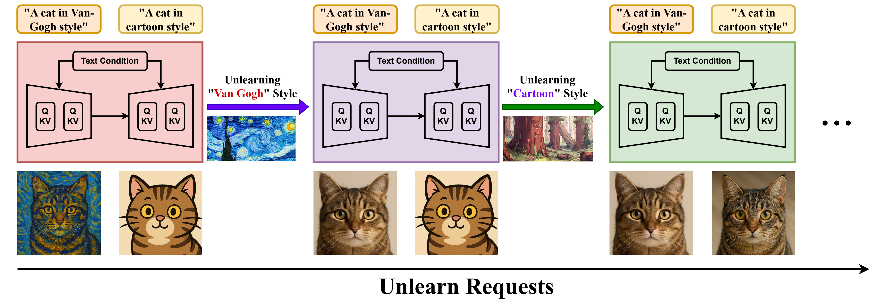
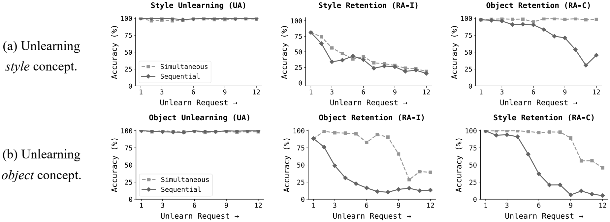
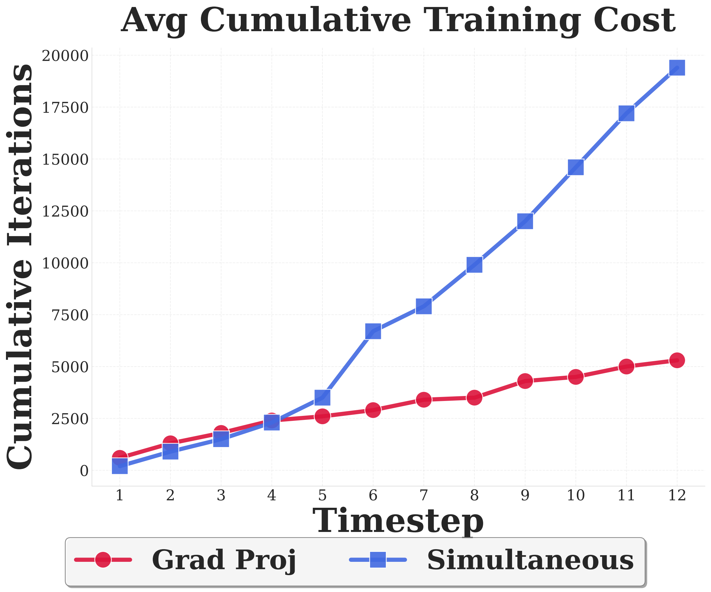
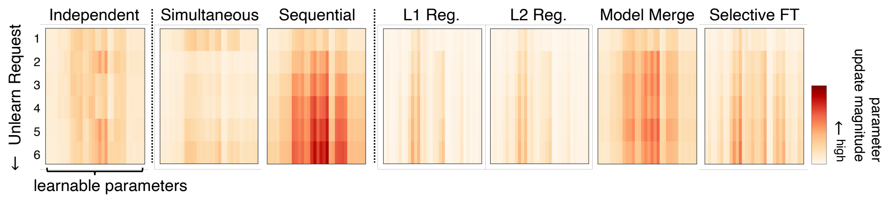
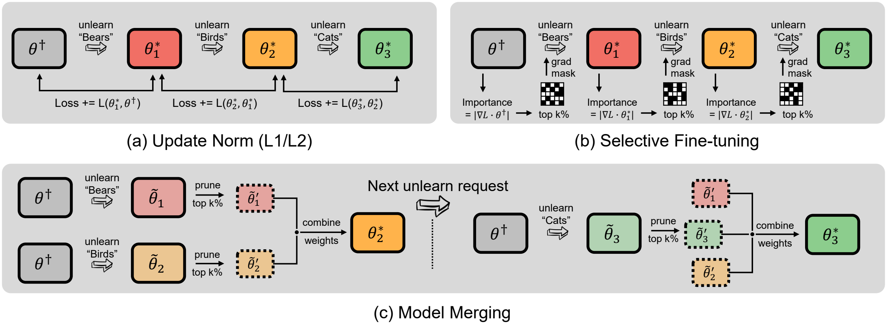
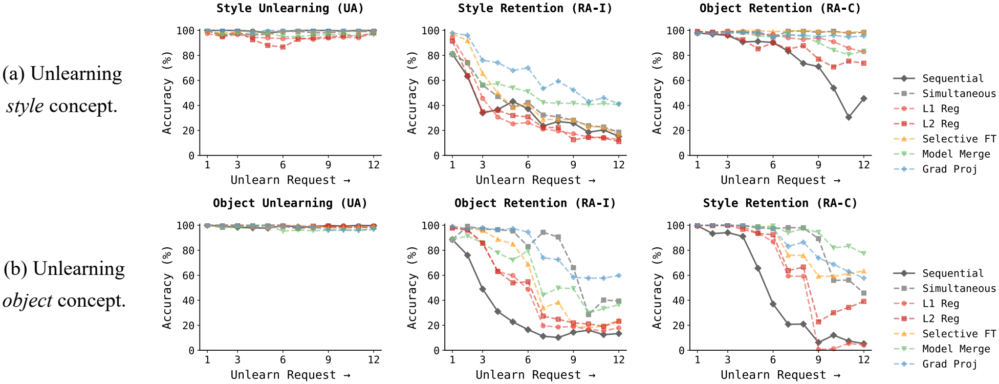
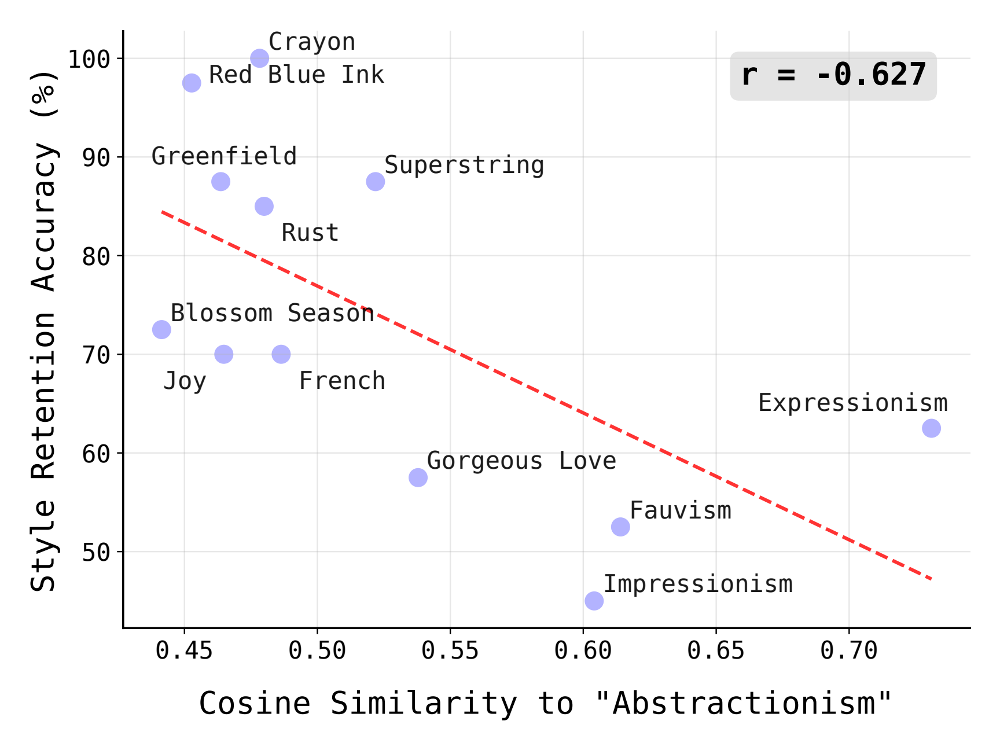
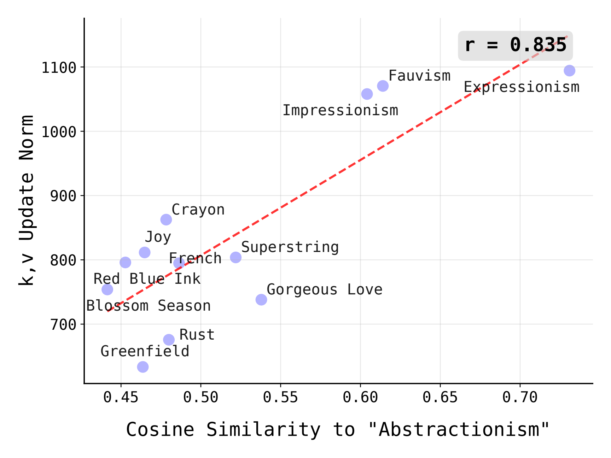
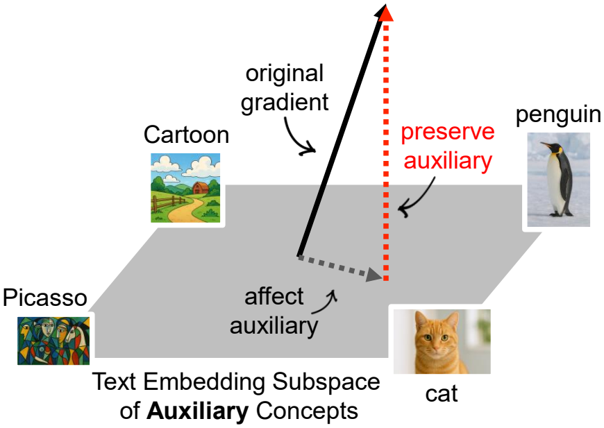
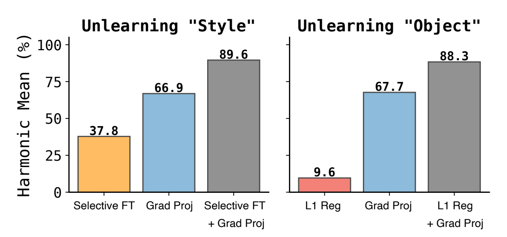

Machine unlearning—the ability to remove designated concepts from a pre-trained model—has advanced rapidly, particularly for text-to-image diffusion models. However, existing methods typically assume that unlearning requests arrive all at once, whereas in practice they often arrive sequentially. We present the first systematic study of continual unlearning in text-to-image diffusion models and show that popular unlearning methods suffer from rapid utility collapse: after only a few requests, models forget retained knowledge and generate degraded images. We trace this failure to cumulative parameter drift from the pre-training weights and argue that regularization is crucial to addressing it. To this end, we study a suite of add-on regularizers that (1) mitigate drift and (2) remain compatible with existing unlearning methods. Beyond generic regularizers, we show that semantic awareness is essential for preserving concepts close to the unlearning target, and propose a gradient-projection method that constrains parameter drift orthogonal to their subspace. This substantially improves continual unlearning performance and is complementary to other regularizers for further gains. Taken together, our study establishes continual unlearning as a fundamental challenge in text-to-image generation and provides insights, baselines, and open directions for advancing safe and accountable generative AI.

This figure defines what success should look like. When a concept is unlearned, only that concept should disappear; other concepts should remain intact. After the first unlearning step, the image for "Cartoon" should remain conceptually unchanged, while the image for "Van Gogh" should no longer exhibit the "Van Gogh" style. Following the second unlearning step, both the "Van Gogh" and "Cartoon" should be removed, while the concept "cat" should be retained.

For both style (a) and object (b) unlearning, sequentially removing 12 concepts severely degrades utility (retention). In contrast, restarting from the base model for each request and unlearning all requests simultaneously better preserve cross-domain knowledge (e.g., retaining objects after removing styles). However, simultaneous unlearning remains prohibitively expensive, as shown in the next figure.

Simultaneous Unlearning is Prohibitively Expensive As unlearning requests accumulate, the total training steps grow superlinearly under simultaneous unlearning, while remaining near linear under sequential unlearning. We therefore analyze why simultaneous unlearning performs better (next figure), with the goal of improving sequential unlearning.

As more concepts are removed, sequential unlearning incurs substantial cumulative parameter drift relative to the pretrained model, far greater than with simultaneous unlearning. We formalize the relationship between parameter drift and utility preservation in Section 5.2. We therefore benchmark different add-on regularizers that mitigate this drift, as illustrated in the next figure.

We provide baselines with three plug-and-play add-on regularizers, compatible with existing unlearning methods, to constrain parameter drift. (a) L1/L2 penalizes the norm of the parameter update relative to the previous checkpoint. (b) Selective Fine-tuning restricts updates to the top-k% most important parameters. (c) Model merging unlearns each concept independently and then combines the resulting models.

Add-on Regularizers Improve Retention. Compared with baseline sequential unlearning, all add-on regularizers improve utility preservation. Retaining concepts within the same domain, for example other styles when removing styles, remains far more challenging than preserving cross-domain concepts, for example objects when removing styles. Our newly proposed regularizer (Grad Proj) achieves the strongest in-domain retention by accounting for semantic interference, with details shown in the next figure.

Semantically Similar Concepts are Harder to Preserve. Concepts with greater text-embedding cosine similarity to the unlearned concepts (e.g., "Abstractionism" style) experience greater utility degradation.

Change in Cross-Attention Keys and Values Increases with Semantic Similarity In UNet diffusion models, cross-attention captures the relationship between text prompts (k, v) and image features (q). As text embedding cosine similarity increases, the k and v outputs become more distorted.

Gradient Projection Motivated by these findings, we project the gradients of the key and value matrices to be orthogonal to concepts with high text-embedding cosine similarity to the concept to be learned, achieving the strongest in-domain utility preservation among all regularizers.

Add on Regularizers Are Combinable. Gradient Projection can be combined with other add-on regularizers, such as selective fine-tuning, to achieve further performance gains.
Understanding how robustness to adversarial recovery attacks evolves across sequential unlearning steps is critical for safe deployment, particularly as it remains unclear whether these challenges compound differently across architectures (e.g., DiT), training objectives (e.g., flow matching), and modalities (e.g., video, speech) beyond diffusion-based image generation. While our plug-and-play regularizers provide a strong foundation, designing natively sequential unlearning methods that anticipate future requests and account for their interactions is a natural next step toward further advancing continual unlearning.
@inproceedings{lee2026continual,
title={Continual Unlearning for Text-to-Image Diffusion Models: A Regularization Perspective},
author={Lee, Justin and Mai, Zheda and Yoo, Jinsu and Fan, Chongyu and Zhang, Cheng and Chao, Wei-Lun},
booktitle={International Conference on Learning Representations (ICLR)},
year={2026}
}